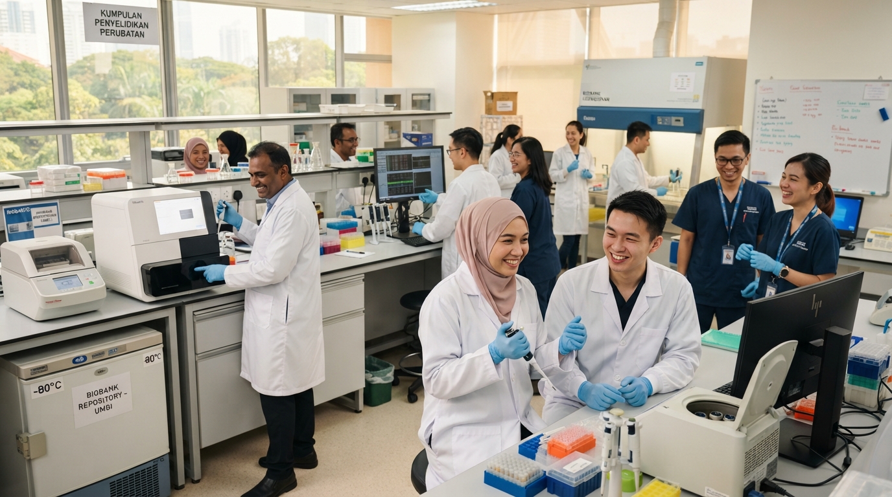

Pioneering population health research for Malaysia.
Through a long-term national study, TMC brings together information about health, genes, environment, and lifestyle to support future research. This page is a design preview grounded in UKM’s current introduction.
Built for discovery over time.
UKM states that the project was initiated in 2004 and approved by the Cabinet in 2005. It set out to build a comprehensive resource of health information and biospecimens from the general population of Malaysia.
The cohort has more than 100,000 participants according to UKM’s published introduction. Its scale allows researchers to study how genes, environment, and lifestyle relate to disease in the population.
Source: The Malaysian Cohort introduction on UKM ↗. Figures and wording should be confirmed with the content owner before official publication.
A national research resource.
The key dates below come from UKM’s current public introduction.
The Malaysian Cohort project was initiated.
The project received Cabinet approval, and the TMC biobank was established under its implementation.
UKM describes a long-term research resource with more than 100,000 participants and membership in the Asia Cohort Consortium.

Illustrative concept image from the supplied Stitch design files.
Connecting people and research.
As part of the Asia Cohort Consortium, TMC contributes to collaborative study of health and disease across populations. The current UKM site remains the source for approved project history, governance, and staff information.
Read the UKM introduction ↗